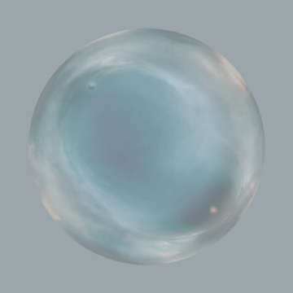

MindIsle WaterBall · M3 连续动态 2.5D 预览
这是验证用的连续动态预览：025、mid-depth、deep-depth 不是三张图互相替换，而是在同一固定球体内部，通过连续光学参数和有限的字段输运，形成一条可播放、可拖拽、可暂停的材质路径。外壳、轮廓、正式高光和产品状态都不参与变化。
M3 SLICE 2 · CONTINUOUS INTERNAL FIELD · NO PRODUCTION
连续动态 2.5D 输出
同一球体 · 当前连续位置
背景：中性灰 · 播放：暂停 · 进度：0.000
这轮真正验证什么
- 进度从 025 到 mid-depth 再到 deep-depth 时，参数连续变化，没有整帧图片切换。
- 内部字段沿既有 refraction 方向做小幅输运，保持水体内部的 2.5D 关系。
- 主体 silhouette、中心、尺寸和命中范围始终不动。
- K2 只作为静态终点参照，当前不向 K2 插值，也不宣称 K2 通过。
当前锚点与边界记录在 m3-continuity-evidence.json。
播放与锚点
0.000
loading continuous field state…
锁定静态锚点与参照
025 · locked authority

当前唯一已锁定的静态材质基线。
mid-depth · study

保留作连续路径的中段参照，不是 050 authority。
050 · static reference

静态参考，不直接作为 runtime 纹理。
K2 · endpoint reference

终点参照；本轮不插值、不迁移。
参数曲线
1.00025 → deep
1.00025 → deep
1.00025 → deep
1.00025 → deep
固定：spatial thickness、silhouette、formal film、reflection、center、radius、hitRadius。变化只发生在内部字段和有限输运。
loading WebGL2 fields…
边界
本页不写入 ProductState，不实现 transitioning / moving，不使用 formation / deformation / core movement，不替换 production renderer，不做 full-frame RGB crossfade。它是 2.5D 连续材质研究，不是最终动态产品实现。